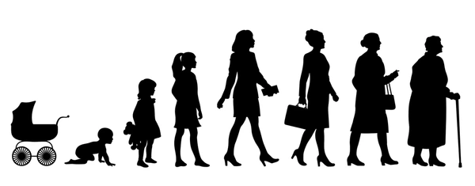
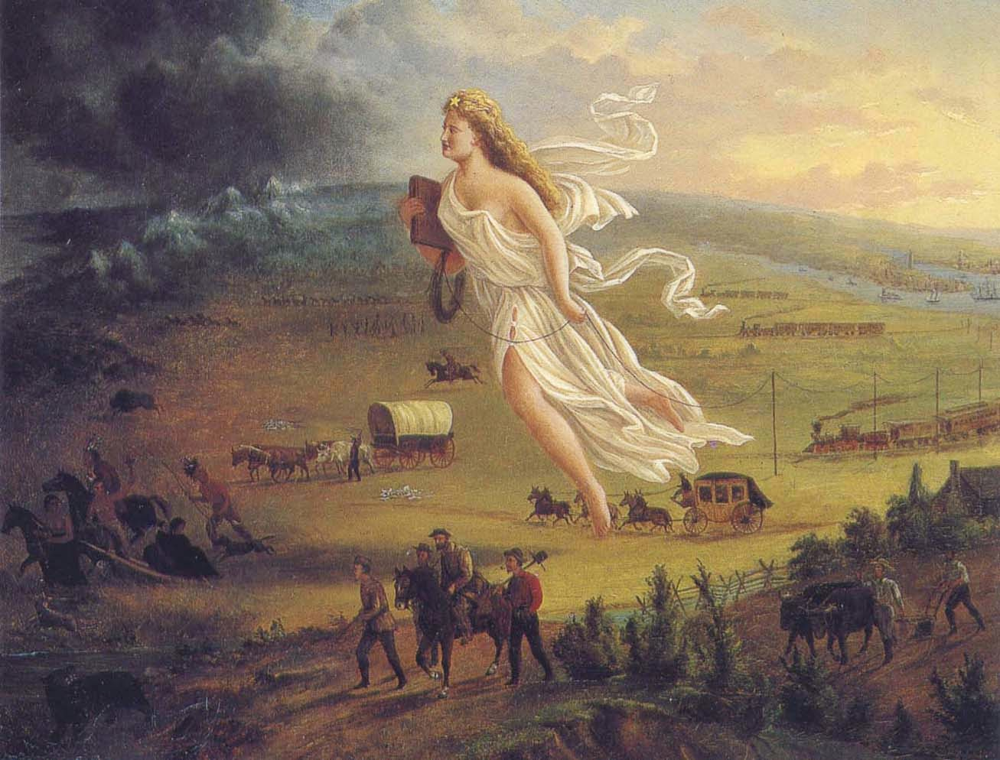
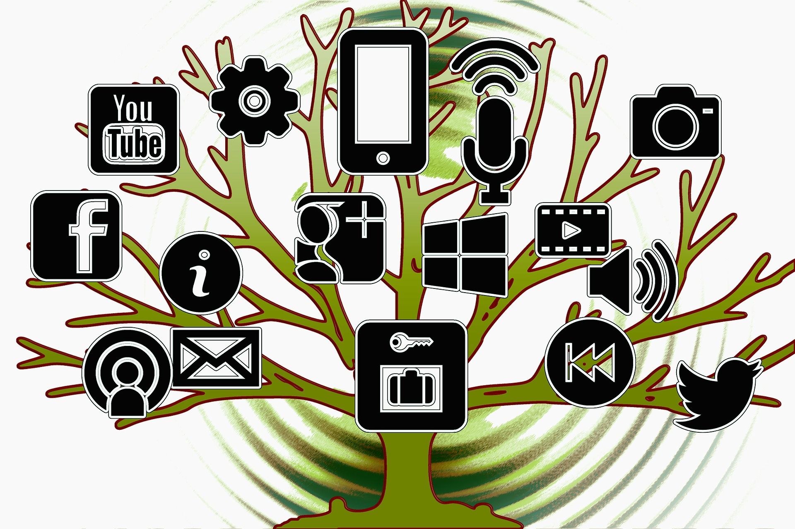

Grupo Entrevistado
Las entrevistas fueron separadas en tres grupos etarios:
- Niños, Niñas y Adolecentes: 8 a 18 años.
- Adultos Jóvenes: 19 a 30 años.
- Adultos Mayores: 50+ años

Tecnología con el propósito de avanzar y evolucionar
La idea más compartida entre los entrevistados es que el propósito principal de la tecnología es el avance y la eficiencia, percepción que se asume como un comportamiento natural y lógico. Muchos participantes definen la tecnología como una herramienta creada para "facilitarnos la vida" (24/F, 31/F) o para hacer las cosas "más simples" (38/F), destacando su utilidad práctica al señalar que "me facilitó el trabajo, lo hizo más práctico, más eficiente" (63/F), o simplemente porque "para las personas que usan celulares y computador, les simplifica harto la vida" (62/F).
Otros definen la tecnología como un medio para solucionar problemas, "ayudar al ser humano en tareas" (21/F) o modificar el entorno (22/F; 47/M). Existe una visión optimista, descrita por un entrevistado (26/M) como un "propósito de ayudar a la humanidad" y un desarrollo responsable para "hacer la vida mejor". Sin embargo, también aparece un matiz reflexivo: mientras algunos ven el avance tecnológico como algo natural ("para que la gente tenga avances", 11/M), otros advierten que existen dos perspectivas: el beneficio directo o el uso de la tecnología como un catalizador económico que puede generar conflictos, como ocurre en la guerra (21/F).

(Gast, 1872)
Concentración de poder y desconfianza ("Tecno-poder")
En contraste con la visión instrumental, surge una postura más crítica que identifica a la tecnología como un ejercicio de poder. Se reconoce que el desarrollo no es neutral, sino que está en manos de grandes gobiernos y empresas, quienes deciden "a quién se lo va a vender" (62/F). Esta narrativa está marcada por la desconfianza hacia tecnologías ocultas y el escepticismo sobre la capacidad de la innovación para resolver problemas estructurales.
Al respecto, los entrevistados enfatizan que "siempre hay gente de gran poder" detrás de estos avances (60/M) y que "solo la gente con plata puede hacerlo" (63/F). Existe la percepción de que la tecnología se desarrolla bajo criterios de rentabilidad: "Se desarrolla lo que es rentable... ayuda, pero no es la solución mágica" (22/F). En esta línea, un entrevistado (26/M) sostiene que, bajo el sistema capitalista, el financiamiento se orienta hacia "la acumulación de dinero más que a tratar de resolver problemas". Esta visión se radicaliza al considerar que empresas privadas priorizan el lucro sobre el bienestar global, como en el caso de la industria farmacéutica, donde podrían "salvar al mundo de distintas enfermedades si las empresas se centraran en eso en vez de llenarse los bolsillos" (23/M). Como sentencia una entrevistada (47/F) respecto a quiénes deciden el rumbo tecnológico: "Ah, los que crean esa hueá, pues".
Instrumentalismo y tecno-pesimismo: La tecnología depende del humano
Otra narrativa sugiere que la tecnología carece de valores propios; es el ser humano quien los otorga. Este enfoque instrumental abre el debate sobre el uso de herramientas como la inteligencia artificial o el acceso a internet, donde aparecen miedos ante su potencial de dominación.
Como señala un entrevistado (60/M), la tecnología busca mejorar, pero "que se ocupen después para otras cosas malas es otro motivo". Este miedo a la mala praxis es compartido, ya que preocupa que "haya gente que la pueda usar de mala manera" (24/F) o que la falta de control exponga a menores de edad a contenidos nocivos (80/F). Al respecto, se argumenta que "si se sabe implementar, sí" puede resolver problemas (31/F), pero existe una desconfianza creciente: "La tecnología no va a hacer que alguien sea millonario y salga de la pobreza" (11/M). En conclusión, prevalece la idea de que "la tecnología por sí misma no [es el problema], la forma en la que puedes llegar a utilizarla sí" (21/F), lo que genera temores sobre la desinformación y el consumo de contenidos inapropiados (11/M, 62/F).

Dependencia tecnológica y adicción: "No hay vuelta atrás"
Existe un sentimiento generalizado de que la infraestructura tecnológica es indispensable para el funcionamiento básico de la sociedad. Esta inevitabilidad se resume en frases como "ya no hay vuelta atrás" (46/F, 31/F) o "como civilización, ya estamos casados con la tecnología" (22/F). Como bien señala una entrevistada (62/F), "ya no se puede retroceder", una idea que también sostiene un joven entrevistado al afirmar que "ya todos la usan" (11/M).
Esta dependencia genera contradicciones: aunque se reconoce que muchas tecnologías responden a la comodidad, cuesta imaginar una vida sin ellas. La brecha generacional es clave aquí, ya que, como menciona una entrevistada (47/F), "un cabro chico se muere sin tecnología, porque ellos están criados con ella", contrastando con su capacidad para adaptarse si el suministro básico falla. Finalmente, la preocupación es transversal respecto a la adicción, observada en la exposición temprana de lactantes a pantallas (63/F) y el impacto nocivo de las redes sociales (38/F).
Miedo y rechazo a ciertas tecnologías
Finalmente, aparece una narrativa de miedo directo hacia tecnologías específicas, particularmente en los adultos mayores, asociada tanto al desconocimiento como a la inseguridad sobre la privacidad y la salud. Existe una desconfianza palpable ante la vigilancia digital, reflejada en la inquietud de una entrevistada (47/F) al notar que su dispositivo parece "espiar" sus conversaciones para ofrecerle anuncios personalizados. A esto se suma el escepticismo ante la inteligencia artificial: "Están muy real. Yo no sé qué chucha creer" (31/F). Asimismo, el temor se extiende a la infraestructura física, como la preocupación por los efectos de las antenas de telefonía (46/F), y al uso de la IA para la manipulación mediática (84/F), lo que demuestra que el rechazo nace de una sensación de pérdida de control sobre lo que ocurre tras la pantalla.
Analisis
Del análisis se desprende que no existe una postura binaria a favor o en contra de la tecnología. Si bien la mayoría la reconoce como una herramienta de progreso, los miedos respecto a su mal uso son inevitables. Existe una brecha generacional notable: mientras los adultos mayores relatan la tecnología desde la experiencia de la "transición" y la adaptabilidad, con una carga de mayor pesimismo e incertidumbre, los jóvenes la asumen como una parte esencial e inalienable de su realidad, siendo ellos quienes muestran una actitud más crítica respecto a quiénes detentan el poder sobre estas herramientas y qué políticas las rigen. Esta incertidumbre, más que natural, parece ser una respuesta a la complejidad del panorama geopolítico y la constante desinformación actual.

Declaramos el uso de I.A (Inteligencia Artificial) para mejorar la redacción y/o corregir posibles errores gramaticales.